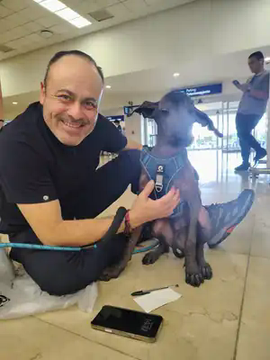

Este domingo 16 de agosto de 2026, Nox Ramírez llegó a Mérida, Yucatán, para comenzar una nueva etapa junto a Román Morales. Alexandra Ramírez viajó con Nox desde Ciudad de México y realizó personalmente la entrega en el Aeropuerto Internacional de Mérida.
El encuentro cerró meses de preparación y seguimiento: desde la reserva y la documentación veterinaria hasta la emisión de su pedigree y el registro digital de su linaje. Al momento de verse por primera vez, Nox ya llevaba consigo no solamente su arnés y correa, sino también una historia familiar documentada.
La identidad de Nox Ramírez
El expediente de Nox se apoya en su Certificado Internacional de Pedigree FCM/FCI, expedido el 12 de agosto de 2026. Para el registro de linaje utilizamos los datos oficiales del documento.
Nombre: NOX (RAMÍREZ/RAMÍREZ) MEX.FCI.
Raza: Xoloitzcuintle
Talla: Intermedia
Variedad: Sin pelo
Sexo: Macho
Color: Negro
Nacimiento: 12 de febrero de 2026
Lugar de nacimiento: Ciudad de México, México
Microchip: 939000002766011
Registro FCM: FCMYV0889-A
Pedigree expedido: 12 de agosto de 2026
Padre: HUAPANGO (RAMÍREZ/RAMÍREZ) MEX.FCI.
Madre: TULA (RAMÍREZ/RAMÍREZ) MEX.
Preparación para el viaje a Mérida
Antes de la salida se completaron los pasos de preparación correspondientes a Nox. Su expediente incluyó su pedigree FCM/FCI, identificación por microchip, cartilla y vacuna contra la rabia, certificado de salud y la documentación de viaje preparada para su traslado. El 14 de agosto Alexandra obtuvo su certificado de salud y, con el expediente organizado, Nox quedó listo para viajar.
El 16 de agosto Alexandra y Nox abordaron el vuelo Aeroméxico AM 0828 desde Ciudad de México con destino a Mérida. Después del aterrizaje, Román los recibió en el aeropuerto para realizar la entrega personalmente y revisar los elementos que acompañan a Nox en el inicio de su nueva vida.
El encuentro con Román Morales
Las fotografías conservan ese primer encuentro. Nox aparece con su arnés azul junto a Román en la terminal aérea, en los minutos en los que una entrega deja de ser un proceso logístico y se convierte en una historia familiar.

Video de la entrega
También dejamos el momento registrado en video para conservar una parte de esta llegada a Mérida.
Linaje registrado en Tonalli Wallet
Antes de su entrega, el NFT de linaje de Nox fue minteado en Tonalli Wallet. Este registro on-chain complementa —sin sustituir— su documentación física y vincula su identidad con los datos de pedigree, microchip y genealogía que forman parte del Archivo del Linaje Vivo de Xolos Ramírez.
Nox Ramírez — Linaje Xoloitzcuintle FCM/FCI
Registro on-chain de identidad y linaje de Nox Ramírez, vinculado al microchip 939000002766011 y al registro FCM FCMYV0889-A.
TXID / Token ID: 46a96ccf2e5ca44bc9fc02e0b3b01fe405016715707c488bcfbb82b80a1680fa
De Ciudad de México a una nueva vida en Yucatán
El viaje terminó en el aeropuerto, pero para Nox la historia apenas comienza. A partir de esta entrega, su vida cotidiana continuará en Mérida junto a Román: nuevos espacios, nuevas rutinas y nuevas memorias que se sumarán a la historia que ya quedó documentada.
Para Xolos Ramírez, cada entrega busca unir tres dimensiones: el acompañamiento humano, la documentación del ejemplar y una memoria digital verificable que permita preservar su identidad y linaje a través del tiempo.
Bienvenido a tu nueva vida en Mérida, Nox Ramírez.
Que esta fotografía de llegada sea apenas la primera de muchas historias junto a Román.